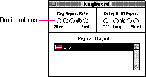
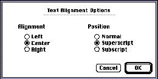
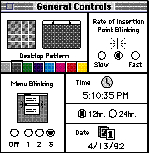

Radio ButtonsA radio button is a Macintosh control that displays a setting, either on or off, and is part of a group in which only one button can be on at a time. They occur in sets and are called radio buttons because they act like the buttons on a car radio. The user can have only one radio button setting in effect at one time, just as you can listen to only one radio station at a time. This means that radio buttons are mutually exclusive. The active setting has a dot in the middle of the button. Clicking one button in a group turns off whichever button was on before. Radio buttons never initiate an action. Figure 7-7 shows a typical set of radio buttons. Figure 7-7 Sets of radio buttons  A set of radio buttons should contain from two to approximately seven items. Some sets could be slightly larger, but you must always have at least two radio buttons in each set. Each group of radio buttons usually has a label that identifies the kind of choices the group contains. Usually, each button has a label that identifies what it does. Sometimes a group of buttons represent a range of incremental options, as shown in Figure 7-7, in which case only the buttons at each end of the range are labeled. A label can be a few words or a phrase. A set of radio buttons always has the same set of choices. It is never dynamic, changing contents depending on the context. The user can click the button itself or the text that identifies the choice to activate the button. Radio buttons represent choices that are related, but not necessarily opposite. For example, a set of radio buttons may provide alignment choices in a word processor. The choices would be left aligned, right aligned, and centered on the page. This group of radio buttons is shown in Figure 7-8. Figure 7-8 Radio buttons for selecting the alignment of text  If more than one group of radio buttons is visible at one time, the groups need to be visually separate from each other. The General Controls panel from the Finder, shown in Figure 7-9, shows some examples of radio button sets that are separate and well labeled. Sometimes it's useful to draw a dotted line around a group of radio buttons to separate it from other elements in a dialog box. Figure 7-9 The General Controls panel  |